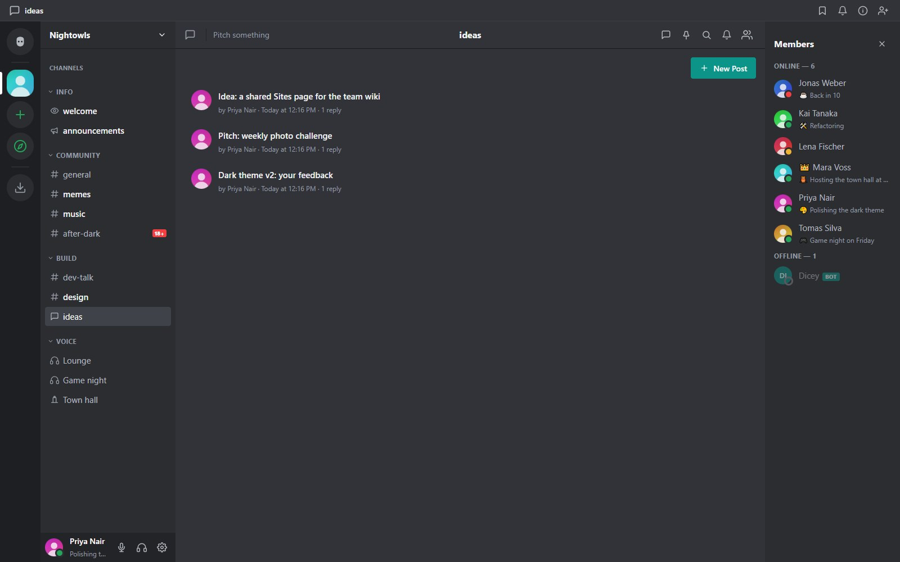
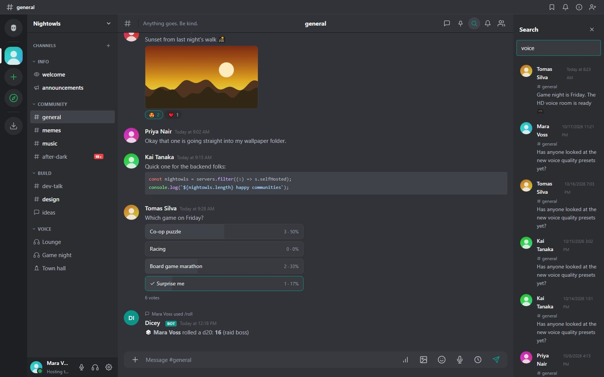

Messaging and search
Writing, editing, replies, threads, forums, polls, voice and scheduled messages, attachments and search.

The basics
Type in the box at the bottom and press Enter. Use Shift+Enter for a new line. Hover a message for its actions: reply, react, thread, edit, pin, forward and more. Press Up in an empty box to edit your last message.
Formatting
**bold**,*italic*, `||spoiler||hides text until clicked.- Type
:and a name for emoji shortcodes,@for mentions and#for channels. - Links get a preview card unless you are in an encrypted DM.
Mentions
@username notifies a person, @rolename a role (single-word names), and @everyone or @here everyone or the people online. Bots can never ping the whole server.
Replies, threads and forums
- Reply to quote a message. Forward copies a message to another conversation.
- Threads start from any message and have their own history. The Threads panel lists every thread in a channel. A thread's creator or a channel manager can give it an icon or delete it.
- Forum channels consist entirely of posts, each with its own thread. Posts show as cards with the author, a preview of the opening message, an image thumbnail, the reaction count and the reply count. A search box finds or starts a post, you can sort by Recent activity or Newest posts, and closed posts carry a Closed badge and accept messages from moderators only. On a wide screen the chosen post opens beside the list; on a phone it opens full screen.

Reactions, polls and pins
Click a reaction to add yours. Polls take a question and options and show live percentages; you can choose several options when the poll allows it. Pinned messages are listed in the pin panel.
Attachments
Up to five attachments per message. Still images can be resized before upload (Original, 1920, 1280 or 800 pixels), animated GIFs get a play and pause button, and non-ASCII file names are kept. The size limit comes from maxUploadMb and the admin panel; some file types (executables, HTML, SVG) are always refused.
Voice messages
The microphone button in the composer records up to five minutes. A red bar shows the time; the bin discards the clip and the send button posts it with a small player (play, progress, seek). It is recorded as Opus in the browser, desktop app or Android app and needs microphone permission and HTTPS or localhost. Voice messages are not available in end-to-end encrypted DMs.
Scheduled messages
The clock button next to the composer opens Send later for what you typed. Pick a time or a preset such as tomorrow at 9:00. The message is posted as you at that moment with the same checks as a normal message, so it can still be refused, for example if you are timed out or AutoMod objects. Failures stay in your list with the reason, and you can cancel anything you scheduled. On the phone interface hold the send button.
Encrypted DMs, Notes channels and DMs with people on other servers cannot be scheduled.
Slash commands
Type / to see the commands you can use. Built-in commands include /me, /nick, /shrug, /spoiler, /thread, /topic and /help. Bots can add their own; see Slash commands.
Search
Open search from the magnifier. Tick which fields to match: message text (full-text search), usernames, channel names and attachment file names. Results open at the message in its channel. Search covers only conversations you can see; Notes channels and encrypted DMs are not searchable, and age-restricted channels are left out until you confirm your age.

Notifications
Each channel and DM can be muted, set to mentions only, or to everything (the default is mentions for channels and everything for DMs). Desktop notifications use the browser or the desktop app. The tray icon of the desktop app shows an unread badge. On Android see the Android app. A chat you open with unread messages shows a red New line above the first one; see Profiles, status and themes for its settings.
Incoming webhooks
A channel manager can create incoming webhooks under the channel's settings. A script POSTs JSON to the webhook URL and a message appears with the webhook's name and avatar. See Bots, API and webhooks.